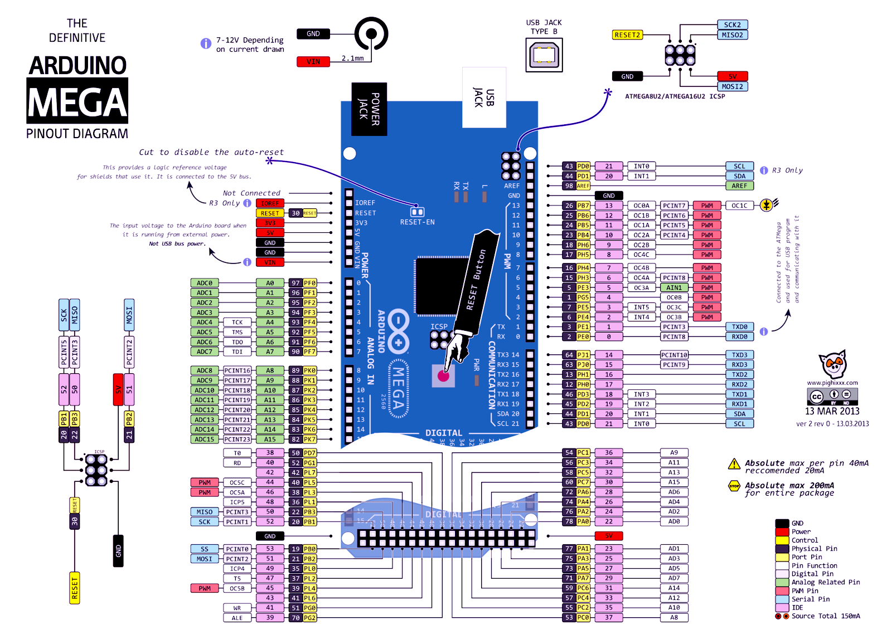

The test LED is located on port B bit nr. 7 (PB7)
This picture shows where PB7 is placed:

Click here to open the picture in a new tab:
Since it is a port the OUTinstruction can be used.
LDI r16, 0b10000000
out ddrb, r16
; set bit 7 on PB to be an Output pin.
out portb, r16
; set bit 7 on portB to be high (to turn on the TEST LED).
forever:
; loop here forever, just to make sure that the CPU aren't doing
anything else
jmp forever
LDI r16, 0b10000000
out ddrb, r16
; set bit 7 on PB to be an Output pin.
LDI r16, 0
out portb, r16
; set bit 7 on portB to be low (to turn off the TEST LED).
forever:
; loop here forever, just to make sure that the CPU aren't doing
anything else
jmp forever
Connect a LED in series with a 220ohm resistor to PA0. Look at the picture above to see where PA0 is located.
LDI r16, 0b00000001
; or just LDI R16, 1.
out ddra, r16
; set bit 0 on PA to be an Output pin.
out porta, r16
; set bit 0 on porta to be high (to turn on the external LED
on).
forever:
; loop here forever, just to make sure that the CPU aren't doing
anything else
jmp forever
LDI r16, 0b00000001
; or just LDI R16, 1.
out ddra, r16
; set bit 0 on PA to be an Output pin.
LDI r16, 0b00000000
; or just LDI R16, 0.
out porta, r16
; clear bit 0 on porta to 0 (to turn on the external LED OFF).
forever:
; loop here forever, just to make sure that the CPU aren't doing
anything else
jmp forever
LDI R18, 0x16
LDI R19, 0xCD
ADD r19, R18
; The result is replacing 0xCD in R19
false
0xFF, which is 255 in decimal
True. First it has to be loaded into the GPR. Afterward it can go to
the SRAM
Syntax... STS can put the value of a GPR into address 0x0200. It
cannot put a value directly
The label PORTA belongs to a different memory mapping. So this code
will put the value of R16 into SRAM address 2, but this is not the I/O
register
LDI R20, 0x9F
LDI R21, 0x61
ADD R20, R21
Z=1, C=1
LDI R20, 0x82
LDI R21, 0x22
ADD R20, R21
Z=0, C=0
LDI R18, 0x67
LDI R21, 157
ADD R18, R21
Z=0, C=1
LDI R16, 0xAA
LDI R21, 0x55
AND R16, R21
R16=0
LDI R16, 0xAA
LDI R21, 0x55
OR R16, R21
R16=255
EOR
INC
DEC
NEG
SUB
HINT: Hint 1: The keywords HIGH() and LOW() takes the 8 MSBs (Most
Significant Bit) and the 8 LSBs (Least Significant Bit) of the 16 bits
number. (e.g ldi Rd, HIGH(0xCA9) = ldi Rd, 0x0C and ldi Rd, LOW(0xCA9) =
ldi Rd, 0xA9 )
Hint 2: Use ADC (add with carry), when adding the most significant byte.
; this program adds 1000 with 2000
ldi r17, HIGH(1000)
; High(1000) = 0b0000 0011
ldi r16, LOW(1000)
; LOW(1000) = 0b1110 1000
ldi r21, HIGH(2000)
; High(2000) = 0b0000 0111
ldi r20, LOW(2000); low(2000) = 0b1101 0000
ADD r16,r20
; R16= 0b1011 1000
ADC r17,r21
; R17 = 0b0000 1011